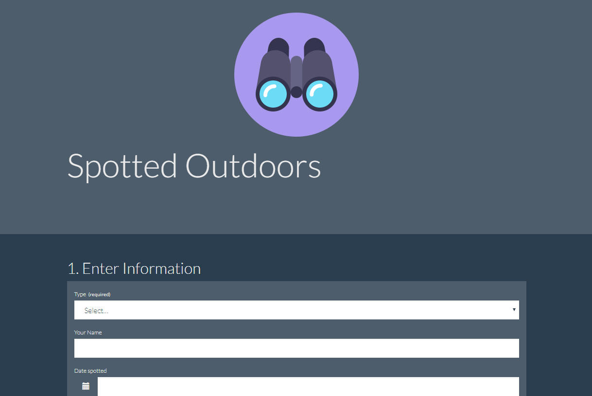
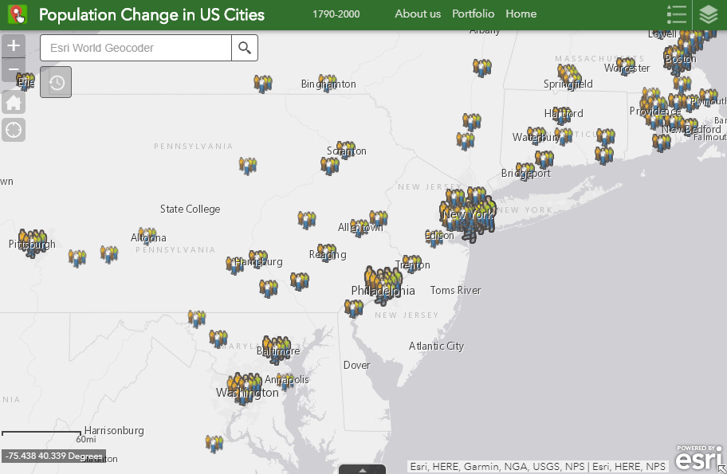

Redlands Tour An ArcGIS Online Story Map Tour showing points of interest in Redlands, CA, creating following the tutorial in Chapter 1 of Getting to Know Web GIS
Map of Recent Earthquakes An ArcGIS Online Web App showing worldwide earthquakes of magnitude 4.5 or greater that have occurred in the last 7 days. The dataset is streamed from the USGS.
 Camping and Hiking Points of Interest An ArcGIS Online Web App with an editable feature layer allowing visitors to contribute "volunteered geographic information" to the map.
Environmental Inventory Data Viewer Explore and analyze environmental and demographic layers for the state of Louisiana.
 Population Change in US Cities, 1790-2000 Animated map showing the growth and westward expansion of the urban population in the United States from 1790 to 2000.